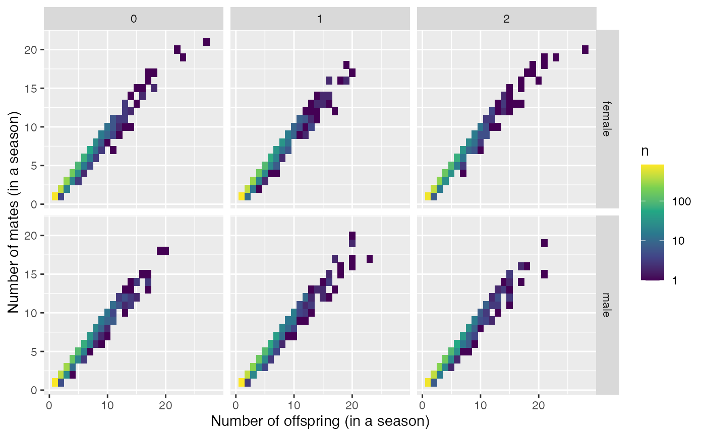

count_and_plot_mate_distribution.RdThis just tallies up the information from the pedigree. It will plot things faceted by pop (over rows) and sexes (over columns).
count_and_plot_mate_distribution(P)
| P | the pedigree from the simulation, like that returned in the |
|---|
result <- count_and_plot_mate_distribution(three_pops_no_mig_slurped_results$pedigree) # have a look at the results: result$mate_counts#> # A tibble: 12,417 x 6 #> sex year pop parent num_offs num_mates #> <chr> <int> <int> <chr> <int> <int> #> 1 female 5 0 F0_0_1 1 1 #> 2 female 5 0 F0_0_12 3 3 #> 3 female 5 0 F0_0_14 1 1 #> 4 female 5 0 F0_0_16 7 7 #> 5 female 5 0 F0_0_19 3 3 #> 6 female 5 0 F0_0_21 1 1 #> 7 female 5 0 F0_0_22 1 1 #> 8 female 5 0 F0_0_23 2 2 #> 9 female 5 0 F0_0_24 23 19 #> 10 female 5 0 F0_0_26 7 6 #> # … with 12,407 more rowsresult$plot_mate_counts